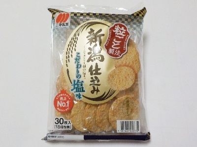
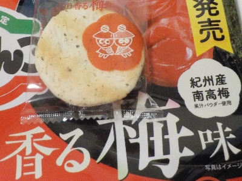
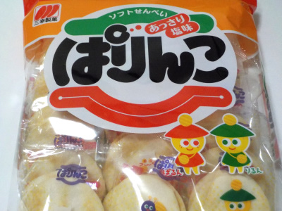
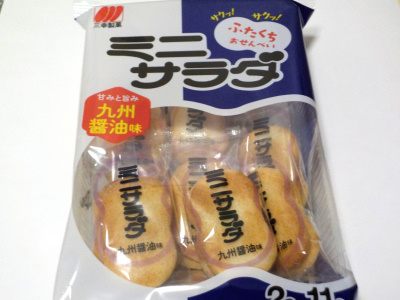

三幸製菓の新潟仕込みーこだわりの塩味ーはぶっちぎり美味しい。
更新日 : 2026/03/04

パッケージに「うす焼カテゴリ売上No.1選ばれています！」って書いてあります。詳しくは小さい字で書いてあるので読んでないです。
醤油味と塩味がありますが、私はこの塩味が好きです。この価格帯のせんべいの中では一番好き。
塩味がしっかり感じれるので、満足感がしっかりあり食べ過ぎないです。お米感があるのもいいです。
2025/11/28 安売りだったので170円でした。
2026/03/04 159円で購入。
三幸製菓のぱりんこ「のり香る梅味かつおの旨みをプラスして」
更新日 : 2025/01/25

海苔と梅とカツオ味のミックスですね。
私は塩味の方が好きでした。次は普通の塩味を買おう。
158円プラス税金でした。
三幸製菓のぱりんこ
更新日 : 2023/03/17

安くて美味しい定番的なソフトサラダせんべいですね。
昔はもっと大きいサイズのソフトサラダせんべいが色々あったんですけど、近頃はあまり見ないかな。
三幸製菓のミニサラダ九州醤油味
更新日 : 2023/02/24

九州醤油味のお菓子は食べるけど九州醤油は食べたことがないです。本当の味はどんな味でしょうね？。
このミニサラダはハッピーターンみたいな甘いパウダーが付いてます。パウダーがとっても美味しいです。